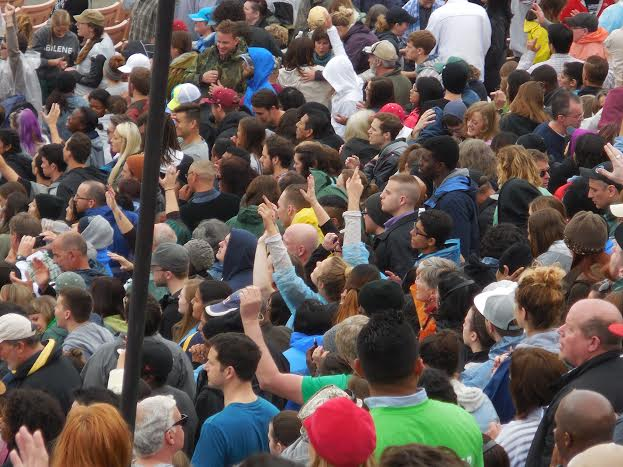
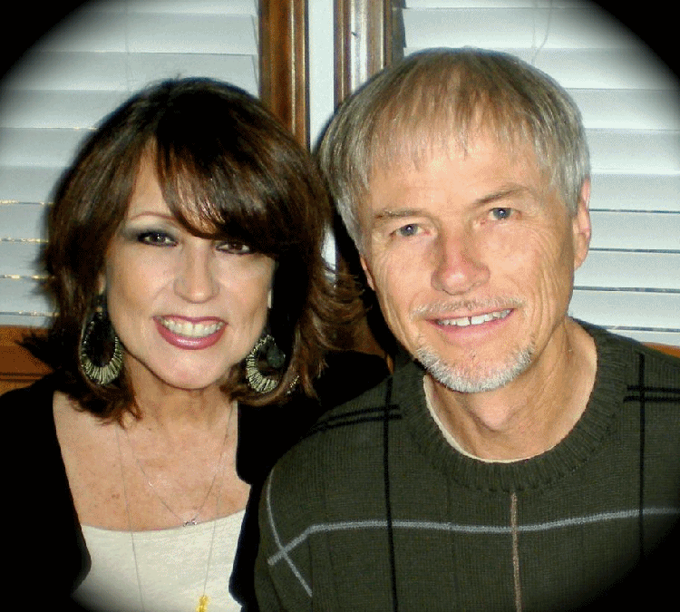

"This church moves me like no other before!” J.L.
Come home to a loving family of believers who encounter God’s presence in our daily lives, growing together in the deep love of Jesus while He is making us new in every way!
-
- 
-

reSURGE is a non-denominational, Global Legacy Network church. We enjoy heartfelt worship music that invites the presence of God. We flow in the prophetic and believe in the
demonstration of the power of God. We have a Supernatural Ministry School, a School of Prophetic Arts, Transformation Ministries, Outreach Ministries, and Men's and Women's Ministries.
"Youth Rock!" is our youth ministry, 7th through 12th grade. "Supernatural Kids" is our children's ministry, with classes for ages 3-12. Our nursery is devoted to bringing the love
of Jesus to our babies, 0 to 2 years of age. If you are hungry for more than just church as usual, then Welcome Home!
reSURGE Supernatural Ministry School
It is critical that we all actually follow Jesus – that we really do become His disciples – and grow on to maturity in Him. Classes offered are primarily designed to help us learn to
live life in personal freedom and dependency on the Holy Spirit, and then partner with Him daily to bring the reality and power of the Kingdom of Heaven into our
culture with His radical love. Questions? Email: info@resurgenow.com
Invitation From The Senior Leaders
We invite you to come with us as we press deep into the heart of Jesus so the Church can be restored to its original purpose of fulfilling the prayer He taught us to pray, that it would be “on earth as it is in Heaven."
